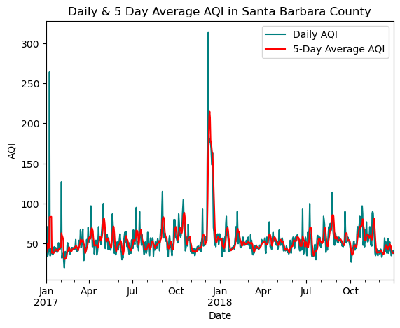
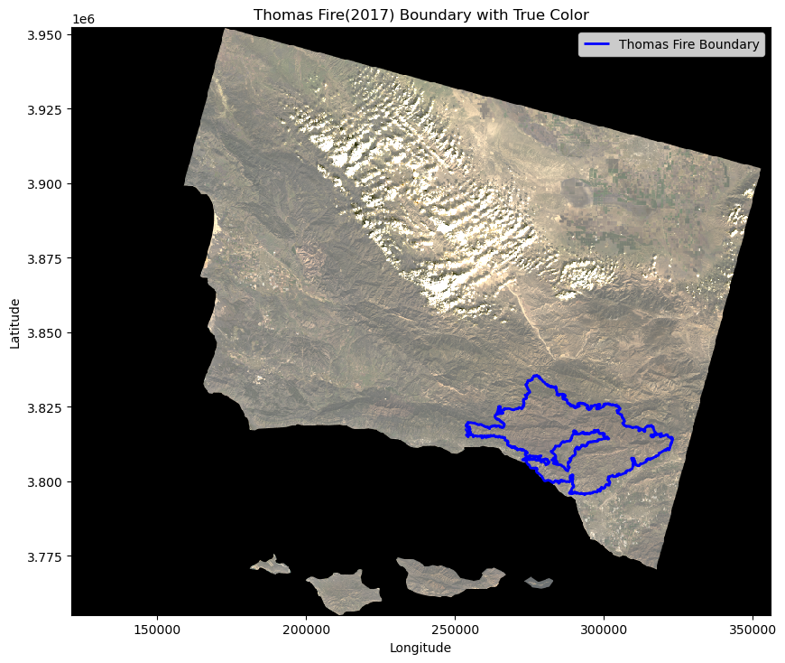
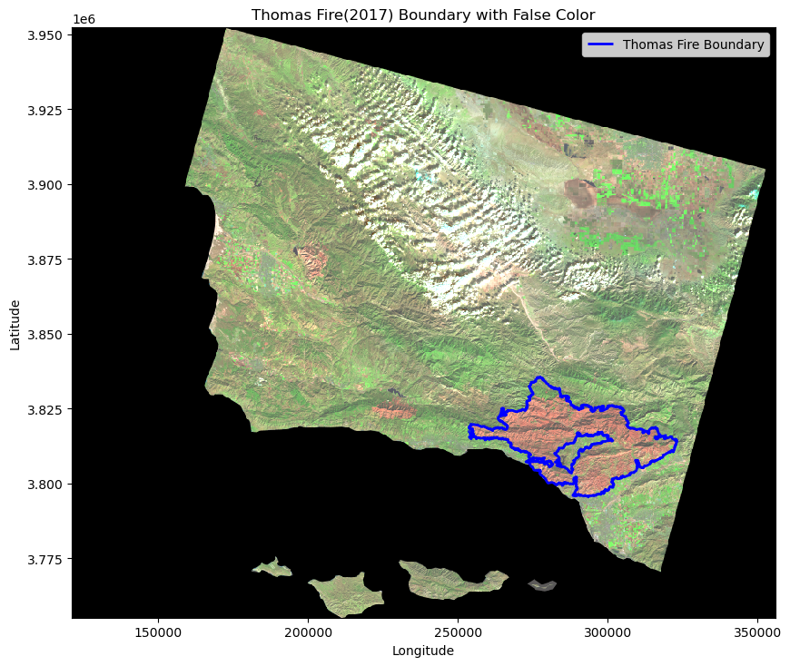

# Import libraries
import pandas as pd
import matplotlib.pyplot as plt
import os
import numpy as np
import geopandas as gpd
import rioxarray as rioxr
import xarray as xrAbout
In this task I used Air Quality Index (AQI) data from the US Environmental Protection Agency to visualize the impact on the AQI of the 2017 Thomas Fire in Santa Barbara County. The Thomas Fire, which burned across Santa Barbara and Ventura counties in December 2017, has been one of California’s largest wildfires, devastating over 280,000 acres of land. The fire started on December 4, 2017 and was considered contained on January 2, 2018.
Palm trees are consumed by the Thomas Fire. Photo credit: Marcus Yam / Los Angeles Times
Highlights
- Combining data frames
- Selecting data form large datasets
- Data wrangling with dates
- Visualizing time series
- Using
rolling()to find a rolling average - True and false color imagery
Datasets
The first two data set contain information from the US Environmental Protection Agency(EPA) regarding AQI. They contain information regarding daily AQI by county in 2017 and 2018.
The fire perimeter data was obtained from https://catalog.data.gov/dataset/california-fire-perimeters-all-b3436. It contains the spatial distribution of large fires in California. It covers fires that date back to 1878.
The landsat data was obtained from https://planetarycomputer.microsoft.com/dataset/landsat-c2-l2 and is from January 26, 2018. The fire perimeter data is from https://catalog.data.gov/dataset/california-fire-perimeters-all-b3436 and was accessed through the server at /courses/EDS220/data/hwk4_landsat_data landsat8-2018-01-26-sb-simplified.nc. It contains the spatial distribution of large fires in California and was pre-processed to remove data outside land and coarsen the spatial resolution.
Load necessary packages
Read in data
We can import the aqi data directly from the urls using pandas pd.read_csv. The fire perimeter and landsat data can be downloaded from the data folder using geopandas and rasterio, respectively.
# AQI data
aqi_17 = pd.read_csv('https://aqs.epa.gov/aqsweb/airdata/daily_aqi_by_county_2017.zip')
aqi_18 = pd.read_csv('https://aqs.epa.gov/aqsweb/airdata/daily_aqi_by_county_2018.zip')
# California fire perimeters data
fp = os.path.join('data','California_Fire_Perimeters','California_Fire_Perimeters_(all).shp')
fire_perimeter = gpd.read_file(fp)
# Landsat data
fp2 = os.path.join('data','landsat8-2018-01-26-sb-simplified.nc')
landsat = rioxr.open_rasterio(fp2)Air Quality Index (AQI)
Wildfires are known to greatly effect air quality in surrounding areas. In this section I will use the daily AQI data to visualize the effects of the Thomas Fire on air quality in Santa Barbara County.
Data exploration
In order to familiarize myself with the data I used various python functions. The functions I used for my initial exploration were .head(), .shape, .nunique(), and .unique().
# Return first 5 rows of `aqi_17_head`
aqi_17_head = aqi_17.head()
aqi_17_head| State Name | county Name | State Code | County Code | Date | AQI | Category | Defining Parameter | Defining Site | Number of Sites Reporting | |
|---|---|---|---|---|---|---|---|---|---|---|
| 0 | Alabama | Baldwin | 1 | 3 | 2017-01-01 | 28 | Good | PM2.5 | 01-003-0010 | 1 |
| 1 | Alabama | Baldwin | 1 | 3 | 2017-01-04 | 29 | Good | PM2.5 | 01-003-0010 | 1 |
| 2 | Alabama | Baldwin | 1 | 3 | 2017-01-10 | 25 | Good | PM2.5 | 01-003-0010 | 1 |
| 3 | Alabama | Baldwin | 1 | 3 | 2017-01-13 | 40 | Good | PM2.5 | 01-003-0010 | 1 |
| 4 | Alabama | Baldwin | 1 | 3 | 2017-01-16 | 22 | Good | PM2.5 | 01-003-0010 | 1 |
# Return first 5 rows of `aqi_18_head`
aqi_18_head = aqi_18.head()
aqi_18_head| State Name | county Name | State Code | County Code | Date | AQI | Category | Defining Parameter | Defining Site | Number of Sites Reporting | |
|---|---|---|---|---|---|---|---|---|---|---|
| 0 | Alabama | Baldwin | 1 | 3 | 2018-01-02 | 42 | Good | PM2.5 | 01-003-0010 | 1 |
| 1 | Alabama | Baldwin | 1 | 3 | 2018-01-05 | 45 | Good | PM2.5 | 01-003-0010 | 1 |
| 2 | Alabama | Baldwin | 1 | 3 | 2018-01-08 | 20 | Good | PM2.5 | 01-003-0010 | 1 |
| 3 | Alabama | Baldwin | 1 | 3 | 2018-01-11 | 25 | Good | PM2.5 | 01-003-0010 | 1 |
| 4 | Alabama | Baldwin | 1 | 3 | 2018-01-14 | 33 | Good | PM2.5 | 01-003-0010 | 1 |
# Find shape of dataframes
print(aqi_17.shape)
print(aqi_18.shape)(326801, 10)
(327541, 10)# Find number of states
print(aqi_17['State Name'].nunique())
aqi_18['State Name'].nunique()5454# Find unique states
print(aqi_17['State Name'].unique())
print(aqi_18['State Name'].unique())['Alabama' 'Alaska' 'Arizona' 'Arkansas' 'California' 'Colorado'
'Connecticut' 'Country Of Mexico' 'Delaware' 'District Of Columbia'
'Florida' 'Georgia' 'Hawaii' 'Idaho' 'Illinois' 'Indiana' 'Iowa' 'Kansas'
'Kentucky' 'Louisiana' 'Maine' 'Maryland' 'Massachusetts' 'Michigan'
'Minnesota' 'Mississippi' 'Missouri' 'Montana' 'Nebraska' 'Nevada'
'New Hampshire' 'New Jersey' 'New Mexico' 'New York' 'North Carolina'
'North Dakota' 'Ohio' 'Oklahoma' 'Oregon' 'Pennsylvania' 'Puerto Rico'
'Rhode Island' 'South Carolina' 'South Dakota' 'Tennessee' 'Texas' 'Utah'
'Vermont' 'Virgin Islands' 'Virginia' 'Washington' 'West Virginia'
'Wisconsin' 'Wyoming']
['Alabama' 'Alaska' 'Arizona' 'Arkansas' 'California' 'Colorado'
'Connecticut' 'Country Of Mexico' 'Delaware' 'District Of Columbia'
'Florida' 'Georgia' 'Hawaii' 'Idaho' 'Illinois' 'Indiana' 'Iowa' 'Kansas'
'Kentucky' 'Louisiana' 'Maine' 'Maryland' 'Massachusetts' 'Michigan'
'Minnesota' 'Mississippi' 'Missouri' 'Montana' 'Nebraska' 'Nevada'
'New Hampshire' 'New Jersey' 'New Mexico' 'New York' 'North Carolina'
'North Dakota' 'Ohio' 'Oklahoma' 'Oregon' 'Pennsylvania' 'Puerto Rico'
'Rhode Island' 'South Carolina' 'South Dakota' 'Tennessee' 'Texas' 'Utah'
'Vermont' 'Virgin Islands' 'Virginia' 'Washington' 'West Virginia'
'Wisconsin' 'Wyoming']Through my data exploration I first I viewed the first five rows of each data frame to familiarize myself with the contents of each column. I then found the size of each data frame; aqi_17 has 326801 rows and 10 colums and aqi_18 has 327541 rows and 10 columns. Next, I looked at the number of unique State Name in each data frame. Both had 54 states included. Since there are only 50 states, I next looked at the unique names for each state in the data frame. For both data frames the 4 extras are Country of Mexico, District of Columbia, Puerto Rico, and Virgin Islands.
Combine data frames
The data frames are currently separate and I want them to be combined on top of each other. This can be achieved using the pandas function pd.concat().
aqi = pd.concat([aqi_17, aqi_18])Data cleaning
From our initial data exploration, I viewed that there were column names with capital letters and spaces. I can tidy the data so all column names are in lower snake case.
# Initial column names
print(aqi.columns, '\n')
# Simplify column names
aqi.columns = (aqi.columns
.str.lower()
.str.replace(' ','_')
)
# New column names
print(aqi.columns, '\n')Index(['State Name', 'county Name', 'State Code', 'County Code', 'Date', 'AQI',
'Category', 'Defining Parameter', 'Defining Site',
'Number of Sites Reporting'],
dtype='object')
Index(['state_name', 'county_name', 'state_code', 'county_code', 'date', 'aqi',
'category', 'defining_parameter', 'defining_site',
'number_of_sites_reporting'],
dtype='object')
Selecting data
I want to select data of interest for this project which was from just Santa Barbara county. I then remove the state_name, county_name, state_code and county_code columns to leave just the date, aqi, category, defining_parameter, defining_stie, and number_of_sites_reporting columns.
# Create new variable with only Santa Barbara county info
aqi_sb = aqi[aqi['county_name'] == 'Santa Barbara']
# Remove `state_name`, `county_name`, `state_code` and `county_code`
aqi_sb = aqi_sb.drop(['state_name', 'county_name', 'state_code', 'county_code'], axis=1)Next I wanted to ensure the date column is a pandas.datetime object. I also want the index of the dataset to be the date column.
# view current data type of date column
aqi_sb['date'].dtypedtype('O')# Update date column to pandas.datetime and set as index
aqi_sb['date'] = pd.to_datetime(aqi_sb['date'])
aqi_sb = aqi_sb.set_index('date')# confirm date column is index
aqi_sb.head()| aqi | category | defining_parameter | defining_site | number_of_sites_reporting | |
|---|---|---|---|---|---|
| date | |||||
| 2017-01-01 | 39 | Good | Ozone | 06-083-4003 | 12 |
| 2017-01-02 | 39 | Good | PM2.5 | 06-083-2011 | 11 |
| 2017-01-03 | 71 | Moderate | PM10 | 06-083-4003 | 12 |
| 2017-01-04 | 34 | Good | Ozone | 06-083-4003 | 13 |
| 2017-01-05 | 37 | Good | Ozone | 06-083-4003 | 12 |
Data wrangling
Next, I want to calculate a rolling average of the AQI over a 5 day period using the rolling()method for pandas.Series. It should be added as a new column to the aqi_sb data frame.
aqi_sb['five_day_average'] = aqi_sb['aqi'].rolling('5D').mean()
aqi_sb.head()| aqi | category | defining_parameter | defining_site | number_of_sites_reporting | five_day_average | |
|---|---|---|---|---|---|---|
| date | ||||||
| 2017-01-01 | 39 | Good | Ozone | 06-083-4003 | 12 | 39.000000 |
| 2017-01-02 | 39 | Good | PM2.5 | 06-083-2011 | 11 | 39.000000 |
| 2017-01-03 | 71 | Moderate | PM10 | 06-083-4003 | 12 | 49.666667 |
| 2017-01-04 | 34 | Good | Ozone | 06-083-4003 | 13 | 45.750000 |
| 2017-01-05 | 37 | Good | Ozone | 06-083-4003 | 12 | 44.000000 |
Data visualization
In order to view the effects of the Thomas Fire on AQI I can make a line plot showing both the daily AQI and the 5-day average (5-day average on top of the AQI) using matplotlib.
# Create line plot
ax = aqi_sb.plot(
y=['aqi', 'five_day_average'], # y variables
title='Daily & 5 Day Average AQI in Santa Barbara County',
xlabel='Date', # x variable
ylabel='AQI',
color={
'aqi': '#008080',
'five_day_average': '#FF0000'
}
)
ax.legend(['Daily AQI', '5-Day Average AQI']) # Update labels in legend
plt.show() # Show the plot
The above graph shows AQI in Santa Barbara County from January 2017 - December 2018. Both daily AQI and an mean AQI on a 5 day rolling basis are shown. In the graph we can see a sharp spike in AQI in December 2017. This is consistent with the time of the Thomas Fire, which took place from December 4, 2017 - January 2, 2018.
True & false color imagery
Fire perimiter data exploration
In order to familiarize myself with the fire perimeter data I use data exploration techniques including finding if the CRS is projected or geographic.
# Find CRS, if its projected or graphic, ellipsoid, and datum of df
print(f"{'The CRS is:':<25} {fire_perimeter.crs}")
print(f"{'Is the CRS geographic?:':<25} {fire_perimeter.crs.is_geographic}")
print(f"{'Is the CRS projected?:':<25} {fire_perimeter.crs.is_projected}")
print(f"{'ellipsoid:':<25} {fire_perimeter.crs.ellipsoid}")
print(f"{'datum:':<25} {fire_perimeter.crs.datum}")The CRS is: EPSG:3857
Is the CRS geographic?: False
Is the CRS projected?: True
ellipsoid: WGS 84
datum: World Geodetic System 1984 ensemble# View the first three rows of the df
fire_perimeter.head(3)| YEAR_ | STATE | AGENCY | UNIT_ID | FIRE_NAME | INC_NUM | ALARM_DATE | CONT_DATE | CAUSE | C_METHOD | OBJECTIVE | GIS_ACRES | COMMENTS | COMPLEX_NA | IRWINID | FIRE_NUM | COMPLEX_ID | DECADES | geometry | |
|---|---|---|---|---|---|---|---|---|---|---|---|---|---|---|---|---|---|---|---|
| 0 | 2023 | CA | CDF | SKU | WHITWORTH | 00004808 | 2023-06-17 | 2023-06-17 | 5 | 1 | 1 | 5.72913 | None | None | {7985848C-0AC2-4BA4-8F0E-29F778652E61} | None | None | 2020 | POLYGON ((-13682443.000 5091132.739, -13682445... |
| 1 | 2023 | CA | LRA | BTU | KAISER | 00010225 | 2023-06-02 | 2023-06-02 | 5 | 1 | 1 | 13.60240 | None | None | {43EBCC88-B3AC-48EB-8EF5-417FE0939CCF} | None | None | 2020 | POLYGON ((-13576727.142 4841226.161, -13576726... |
| 2 | 2023 | CA | CDF | AEU | JACKSON | 00017640 | 2023-07-01 | 2023-07-02 | 2 | 1 | 1 | 27.81450 | None | None | {B64E1355-BF1D-441A-95D0-BC1FBB93483B} | None | None | 2020 | POLYGON ((-13459243.000 4621236.000, -13458968... |
# Find the size of the df
fire_perimeter.shape(22261, 19)# Find what years are included in the df
fire_perimeter['YEAR_'].unique()array([2023, 2022, 2021, 2020, 2019, 2018, 2017, 2016, 2015, 2014, 2013,
2012, 2011, 2010, 2009, 2008, 2007, 2006, 2005, 2004, 2003, 2002,
2001, 2000, 1999, 1998, 1997, 1996, 1995, 1994, 1993, 1992, 1991,
1990, 1989, 1988, 1987, 1986, 1985, 1984, 1983, 1982, 1981, 1980,
1979, 1978, 1977, 1976, 1975, 1974, 1973, 1972, 1971, 1970, 1969,
1968, 1967, 1966, 1965, 1964, 1963, 1962, 1961, 1960, 1959, 1958,
1957, 1956, 1955, 1954, 1953, 1952, 1951, 1950, 1949, 1948, 1947,
1946, 1945, 1944, 1943, 1942, 1941, 1940, 1939, 1938, 1937, 1936,
1935, 1934, 1933, 1932, 1931, 1930, 1929, 1928, 1927, 1926, 1925,
1924, 1923, 1922, 1921, 1920, 1919, 1918, 1917, 1916, 1915, 1914,
1913, 1912, 1911, 1910, 1909, 1908, 1907, 1906, 1905, 1903, 1902,
1900, 1898, 1896, 1895, 1878, 0])# Find what agencies are included in the df
fire_perimeter['AGENCY'].unique()array(['CDF', 'LRA', 'CCO', 'FWS', 'USF', 'NPS', 'BLM', 'BIA', 'DOD',
None, 'OTH'], dtype=object)Through the initial data exploration, we found the CRS is EPSG 3857. We also found the data is projected and not geographic and the ellipsoid is WGS 84. We viewed the first three columns of the dataframe and was able to look at the different column names. We then looked at the shape of the df and found there are 22261 rows and 19 columns. We also looked at the years that this df covers and the yeaers span from 1878-2023 with a year 0 as well. The agencies included in this df are ‘CDF’, ‘LRA’, ‘CCO’, ‘FWS’, ‘USF’, ‘NPS’, ‘BLM’, ‘BIA’, ‘DOD’, ‘OTH’, and none.
Selecting data
Next< I want to find subset the data to contain just the information regarding the Thomas Fire of 2017.
# Select the Thomas Fire in 2017 and save to new variable
thomas_fire = fire_perimeter[(fire_perimeter['FIRE_NAME'] == "THOMAS") & (fire_perimeter['YEAR_'] == 2017)]
thomas_fire.head()| YEAR_ | STATE | AGENCY | UNIT_ID | FIRE_NAME | INC_NUM | ALARM_DATE | CONT_DATE | CAUSE | C_METHOD | OBJECTIVE | GIS_ACRES | COMMENTS | COMPLEX_NA | IRWINID | FIRE_NUM | COMPLEX_ID | DECADES | geometry | |
|---|---|---|---|---|---|---|---|---|---|---|---|---|---|---|---|---|---|---|---|
| 2654 | 2017 | CA | USF | VNC | THOMAS | 00003583 | 2017-12-04 | 2018-01-12 | 9 | 7 | 1 | 281791.0 | CONT_DATE based on Inciweb | None | None | None | None | 2010 | MULTIPOLYGON (((-13316089.016 4088553.040, -13... |
Landsat data
Now, I want to explore the leandsat data.
landsat<xarray.Dataset> Size: 25MB
Dimensions: (band: 1, x: 870, y: 731)
Coordinates:
* band (band) int64 8B 1
* x (x) float64 7kB 1.213e+05 1.216e+05 ... 3.557e+05 3.559e+05
* y (y) float64 6kB 3.952e+06 3.952e+06 ... 3.756e+06 3.755e+06
spatial_ref int64 8B 0
Data variables:
red (band, y, x) float64 5MB ...
green (band, y, x) float64 5MB ...
blue (band, y, x) float64 5MB ...
nir08 (band, y, x) float64 5MB ...
swir22 (band, y, x) float64 5MB ...Through the data exploration I can see it has 4 dimensions which are band, x, y, and spatial_ref. The band and spatial_ref are int64 and x and y are float64. We then have 5 data variables: red, green, blue, nir08, and swir22.
Selecting data
I want to drop the band dimensions of the data
# Drop band dimension in landsat
landsat = landsat.squeeze().drop_vars("band")Match CRSs
It’s important to make sure the CRSs of the landsat data and thomas_fire data match so we can map them together.
# Find the CRS of the landsat and thomas_fire data
print(f"{'The CRS of landsat is:':<27} {landsat.rio.crs}")
print(f"{'The CRS of thomas_fire is:':<27} {thomas_fire.crs}")The CRS of landsat is: EPSG:32611
The CRS of thomas_fire is: EPSG:3857# Reproject thomas_fire crs and verify they match
thomas_fire = thomas_fire.to_crs(landsat.rio.crs)
print('Matched CRS?', thomas_fire.crs == landsat.rio.crs)Matched CRS? TrueTrue color imagery
I created a map of true color imagery and the Thomas Fire boundary to see if true color imagery captures the effects of the fire on the land.
# Create map with ftrue color image and the Thomas Fire boundary
fig, ax = plt.subplots(figsize = (10, 10)) # Setup plot
landsat[['red', 'green', 'blue']].to_array().plot.imshow(ax = ax, robust = True) # Plot the landsat bands
thomas_fire.boundary.plot(ax = ax, edgecolor = 'blue', linewidth = 2, label="Thomas Fire Boundary") # Plot the thomas fire data on same plot
ax.set_title("Thomas Fire(2017) Boundary with True Color Image") # Set title
ax.set_xlabel("Longitude") # Set x axis label
ax.set_ylabel("Latitude")# Set y axis label
ax.legend() # Make legend
plt.show() # Show map
This map is showing a section of California that includes Ventura and Santa Barbara counties with true color imagery. The bands included in this true color image are red, green, and blue. The Thomas Fire of 2017 boundary is outlined shown in blue. From this true color image, you can not see any impact of the fire. The area where the fire took place looks similar to surrounding areas. This satellite imagery was from 1/26/2018 and the Thomas Fire started 12/4/2017 and was contained on 1/12/2018. This imagery is therefore taken shortly after the fire was contained.
False color imagery
I created a map of false color imagery and the Thomas Fire boundary to view the effects of the fire on the land.
# Create map with false color image and the Thomas Fire boundary
fig, ax = plt.subplots(figsize = (10, 10)) # Setup plot
landsat[['swir22', 'nir08', 'red']].to_array().plot.imshow(ax = ax, robust = True) # Plot the landsat bands
thomas_fire.boundary.plot(ax = ax, edgecolor = 'blue', linewidth = 2, label="Thomas Fire Boundary") # Plot the thomas fire data on same plot
ax.set_title("Thomas Fire(2017) Boundary with False Color Image") # Set title
ax.set_xlabel("Longitude") # Set x axis label
ax.set_ylabel("Latitude")# Set y axis label
ax.legend() # Make legend
plt.show() # Show map
This map is showing a section of California that includes Ventura and Santa Barbara counties with false color imagery. The bands included in this false color image are short wave infared(SWIR), near infared(NIR), and red. The Thomas Fire of 2017 boundary is outlined shown in blue. Compared to the true color image, you can see a drastic difference in areas where the fire took place and areas that were not burned. Recently burned areas appear red due to the fact that they highly reflect shortwave infared. You can see the red inside the Thomas Fire boundary. This satellite imagery was from 1/26/2018 and the Thomas Fire started 12/4/2017 and was contained on 1/12/2018. This imagery is therefore taken shortly after the fire was contained.
Information on false color imagery was obtained from:
- https://earthobservatory.nasa.gov/features/FalseColor
- https://www.usgs.gov/faqs/what-are-band-designations-landsat-satellites
- https://www.usgs.gov/media/images/common-landsat-band-combinations